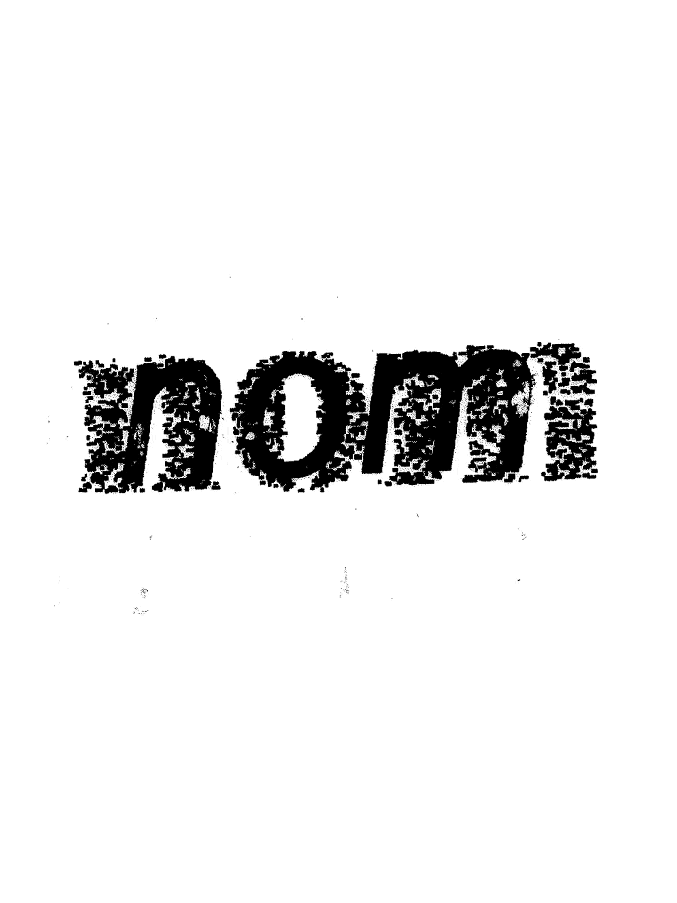
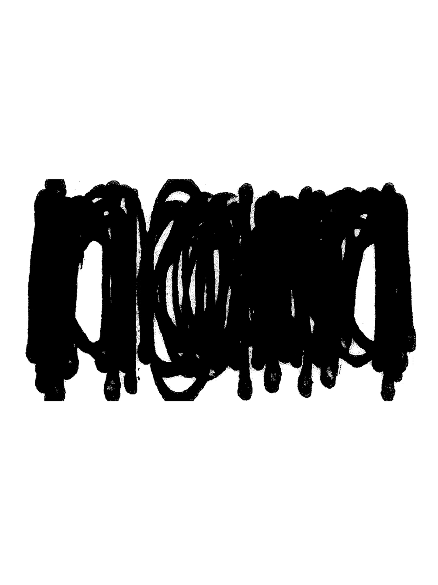
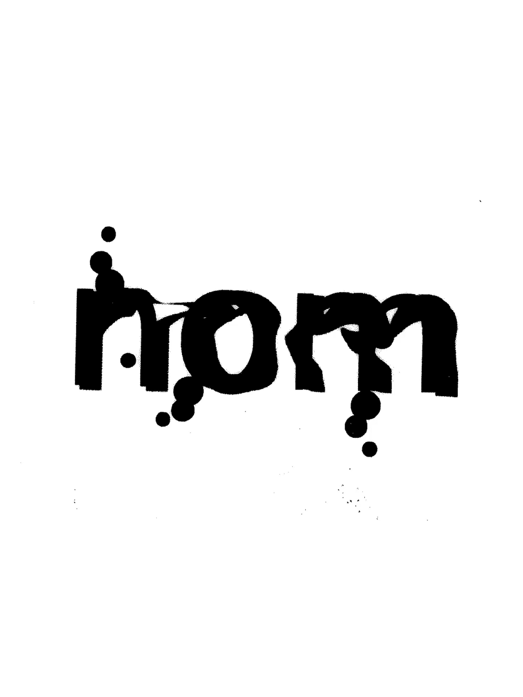
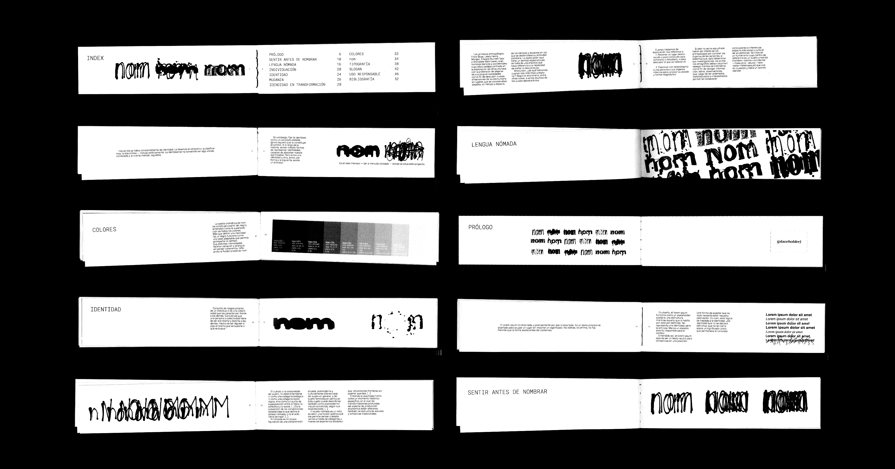
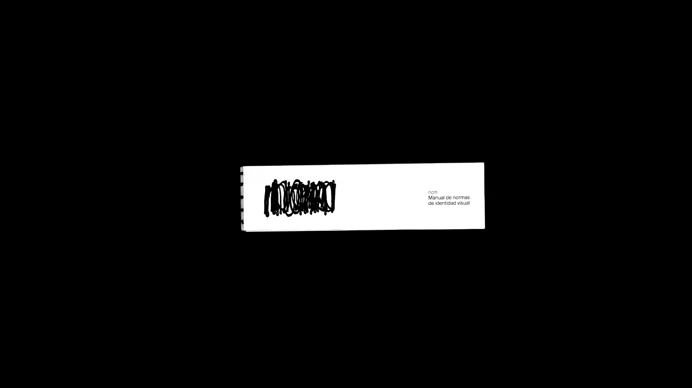
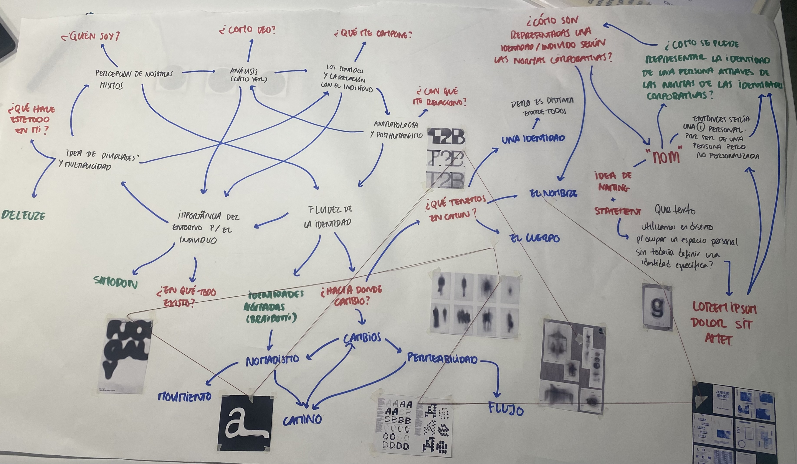

nom is a design research project that explores the fluidity of personal identities through the visual language of corporate design. nom is the Catalan word for name. It was born during an Erasmus in Barcelona, from a question that displacement makes urgent: if we are always changing, how do you design an identity that holds through change?
The project applies the full rigour of corporate branding (systems, typefaces, colour palettes, usage rules) to something that is, by nature, unstable. Instead of a fixed, stable mark, nom proposes a system where variation is the rule. The logo is never the same twice. Layered, distorted, fragmented — yet always readable as nom. Like a personal identity: it shifts, accumulates, contradicts itself. And remains, somehow, the same.





